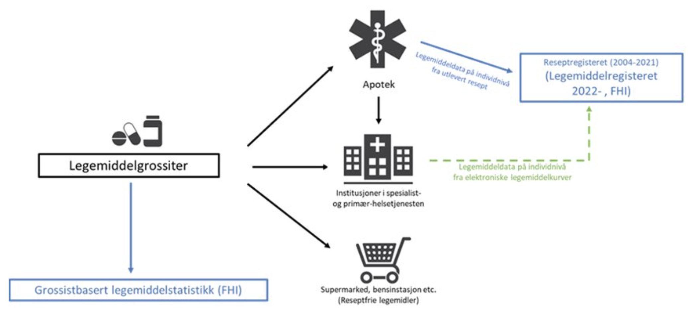

Legemiddeldata fra institusjon til Legemiddelregisteret
0.6.7 - ci-build

Legemiddeldata fra institusjon til Legemiddelregisteret
0.6.7 - ci-build

Legemiddeldata fra institusjon til Legemiddelregisteret - Local Development build (v0.6.7) built by the FHIR (HL7® FHIR® Standard) Build Tools. See the Directory of published versions
| Official URL: http://hl7.no/fhir/ig/lmdi/ImplementationGuide/hl7.fhir.no.lmdi | Version: 0.6.7 | |||
| Draft as of 2024-06-12 | Computable Name: Lmdi | |||
Komplette og oppdaterte helsedata på legemidler er tilgjengelig for analyse og forskning med tanke på å forbedre kvalitet, styring, helseovervåking, beredskap og kunnskapsforvaltning i helsetjenesten
Samle inn legemiddeldata på individnivå fra polikliniske og innlagte pasienter i institusjon til Legemiddelregisteret (LMR). Som et ledd i dette utvikles det en implementasjonsguide (IG) basert på en felles informasjonsmodell og HL7 FHIR (dette dokumentet). Dette skal benyttes for innsending av data fra institusjon til LMR ved hjelp av datadeling (sikret REST API).

I første omgang utvikles implementasjonsguiden for FHIR R4, da dette er anbefalingen fra Helsedirektoratet og HL7 Norge. Tilrettelegging for R4B eller R5 må vurderes på et senere tidspunkt.
Er HL7 FHIR nytt for deg anbefaler vi å ta en titt på HL7 Norge sin side med ressurser, f.eks. introduksjon for henholdsvis klinikere, arkitekter og utviklere.
Hovedmålet er datadeling ved hjelp av RESTful API i henhold til HL7 FHIR sin spesifikasjon, og etter anbefaling fra Helsedirektoratet.
Inntil videre er profilene og implementasjonsguiden (se siste build) agnostiske til om det skal genereres dokumenter eller forskjellig mønster for REST API (f.eks. reference vs logical id).
Versjon 0.9 sommer 2024.